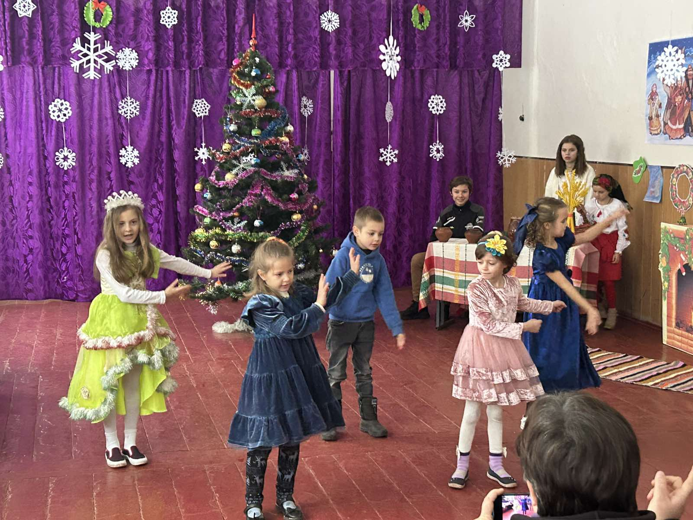

20 березня 2026
•
Адміністрація ліцею
У нашому закладі відбувся Тиждень читання поезії «Золотий гомін – 2026», який став справжнім святом слова, творчості та натхнення.

Протягом цього тижня у нашому закладі відбулося багато цікавих заходів. Учнів чекали різноманітні активності, серед яких: конкурси читців поезії, вікторини, інтерактивні ігри та написання власних віршів.
«Дякуємо всім, хто долучився до проведення цього тижня! Нехай поезія надихає на нові звершення!»
—завідувач філії
Учасники із захопленням декламували поетичні твори, відкривали власні таланти та створювали авторські поезії. За активну участь, креативність і любов до художнього слова найкращі учасники були відзначені грамотами.
Фото з відкриття


Ще раз щиро дякуємо всім, хто долучився до цієї важливої справи! 💙💛